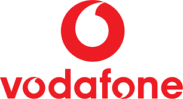
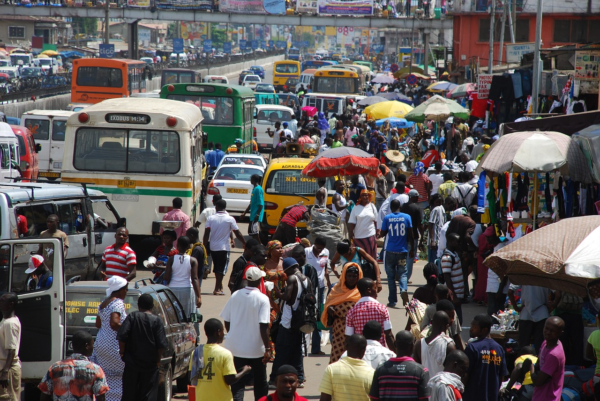

Breaking News: Vodafone setup Office In Ghana
Vodafone Ghana’s Dream Car Promo, a six-month-long SMS-based trivia challenge, has concluded its tenth cycle, rewarding the champion, Renay Tutu, with a brand-new Suzuki Swift. .
This exciting promotion, which has become a highlight for Vodafone Ghana customers, also saw six participants walking away with the coveted iPhone 14. Throughout the promotion, subscribers engaged in an interactive game of wits, answering daily questions to accumulate points and ascend the leaderboard..
With high stakes, including a monthly prize of an iPhone 14 and the grand prize of a Suzuki Swift, the competition fostered a spirited engagement among participa
David Umoh, Director of the Consumer Business Unit at Vodafone Ghana, emphasised the importance of such promotions in strengthening customer relationships. “Our commitment through the Dream Car Promo is to offer unique and enriching experiences, and it is rewarding to see customers like Renay Tutu embrace and succeed in these initiatives,” he stated. .
The Dream Car Promo is part of a broader initiative by Vodafone Ghana to engage and reward its customers, offering a car every six months alongside monthly prizes. The telecommunications company is set to rebrand as Telecel Ghana by the end of the first quarter of 2024, following the acquisition of a 70% majority stake by the Telecel Group in February 2023. Initiatives like the Dream Car Promo play a critical role in this transition, demonstrating the company’s ongoing dedication to delivering unique and rewarding experiences.
The tenth cycle of the promotion, which began in May 2023, was open to all Vodafone Ghana customers. With the eleventh cycle already underway, customers can dial *2018# to join. To compete, customers will have to answer up to five questions daily, accruing points that could lead to monthly iPhone rewards or the grand Suzuki Swift prize after six months.
As Vodafone Ghana continues with the eleventh cycle of the Dream Car Promo, the anticipation among customers grows, promising more excitement and opportunities for rewarding engagement in the months ahead.